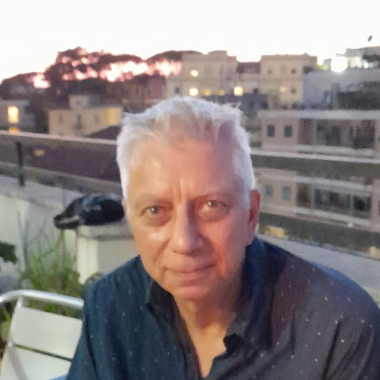

Welcome...
Here you'll find some messages, greetings and insights to begin the journey.
Pilgrims for Half a Century
A 50-year journey guided by the hand of three popes: Paul VI, John Paul II, Francis
 The pilgrimage team
The pilgrimage team
Pompei 2025
Rome 1975, then Assisi and again the capital, up to this pilgrimage to the Sanctuary of Pompei. We began with the blessing of Pope Paul VI, we were accompanied by the prayers of Pope John Paul II, we accepted the invitation of Pope Francis to be "leaven in the Church and in society". And we continue forward, still seeking to do "what the Spirit will tell us". As a Faith and Light community, we have been walking in Italy for 50 years, a figure that inspires awe, that stimulates reflections on past, present and future...
"Great things He has done for us": He has overturned outdated schemes and logic, He has reversed perspective, He has helped us understand that the most fragile can be the protagonist...
A special thank you to all of you, who have accepted the invitation to become pilgrims again; to the Campania communities that welcome us; to the scouts and to all those who have helped us overcome obstacles...
A Spiritual Journey
A reflection by Father Benoit on the deep meaning of the pilgrimage to the Madonna of Pompei
 Father Benoit Malvaux
Father Benoit Malvaux
National ecclesiastical assistant
The great family of Faith and Light Italy is gathered in pilgrimage to the Shrine of the Blessed Virgin Mary of the Holy Rosary, better known as "Madonna of Pompei", made for us, in more than 50 years of existence. This is not a simple trip, but a properly spiritual initiative, whose meaning is worth exploring.
First of all, we set out on pilgrimage. This word comes from the Latin "peregrinatio", which expresses the desire to travel far. But this journey is not made for the simple pleasure of discovering unknown lands. It is a religious journey, usually made to a sacred place, to thank the Lord, to do penance, or to deepen faith or the meaning of life. The outward journey that the pilgrim makes is thus at the service of another journey, more fundamental, that takes place within himself.
During these days of pilgrimage, our inner journey will first be one of thanksgiving to the Lord for the beautiful gift of fifty years of existence of Faith and Light in Italy. We can thus make our own the words of praise to the Lord spoken by Mary in the Magnificat. Upon hearing Elizabeth's words, Mary thanked God for the presence of Jesus in her. We too can give thanks for the presence of God in the life of our communities and in the life of each of us, which has allowed us to live so many beautiful and great things.
In this sense, it is beautiful that the destination of our pilgrimage is precisely a shrine dedicated to the Madonna, and more specifically to the Madonna of the Rosary, who prays to her Son for us and with us. We can also thank the Madonna for her intercession and pray that she continue to ask Jesus to bless our families and our communities.
Saying Thank You Together
The generational gratitude of Pietro Vetro for the gifts received and the mission to continue
 Pietro Vetro
Pietro Vetro
President Faith and Light APS
E noi, tuo popolo e gregge del tuo pascolo,
ti renderemo grazie per sempre;
di generazione in generazione narreremo la tua lode
Dearest friends,
in these days we find ourselves in Pompei to give thanks to the Lord for the great gifts He has given us: our fragile friends, their parents, their brothers and sisters, all the companions on the journey that He has made us meet at Faith and Light, in Italy, but also in Cyprus, Greece, Albania, Croatia, Slovenia... We thank Him because we are all single steps of a long journey, which is that of Faith and Light, started by our founders and which we, in our small way, with what little we have, contribute to keeping alive.
I still remember my first meeting with the Faith and Light community to which I belong, Santa Croce: we immediately talked about a pilgrimage that would take place shortly after: the one to Lourdes. Seven months later, we were traveling. I have very vivid memories of those days: 20 hours of travel on a boiling train just for us, then the impact with the town and all its sacred gadgets, the Esplanade, the Prairie and the Church of Saint Bernadette, 15,000 pilgrims from all over the world, each with their own colored poncho, the first Washing of Feet in the hotel with the people from my community, the first time I heard the song "Son io a far comunità" (in French), the visit to the grotto, the immersion in the pools with Corrado, the services celebrated with Christians of other denominations together with Federico, the long return journey spent chatting until late sipping instant cappuccino and Tavernello. In the end I was so happy that I felt the need to write a letter to all my friends telling what my wife and I had experienced and concluding with "Entering Faith and Light in 2000 for me and Ilaria was really a stroke of luck" (I actually used another term, but let's say it's better to write it this way).
I had entered Faith and Light as an adult, married, unlike many who attended (and still attend) the Santa Croce community. I have always felt part of another generation, even if not by age: that of people who entered Faith and Light "after". As part of a subsequent generation, I perceived the fortune of being able to observe the Movement with "new" eyes, the awareness of having missed many things, the task of carrying forward, first of all as a member of the Santa Croce community, the journey that had been started before my arrival... "from generation to generation".
I have participated in other Faith and Light pilgrimages: to Assisi, to Loreto (when we had already separated into the three Provinces), again to Assisi and now to Pompei. I have shared my journey with many people who now watch us from Heaven, towards whom I feel deep gratitude for what they have said, written, done, witnessed: Mariangela Bertolini, Stefano Di Franco, Anna Giulia Balzarini, Corrado Fontani and many others. It is also to continue what they started that, when I am asked to accept a responsibility, I respond with a "yes": because I belong to a generation that came after theirs and the best way to thank them is to contribute in my small way so that what was their dream, that journey of many small steps, continues.
A pilgrimage is first of all a moment of thanksgiving, I wrote at the beginning. This is why it is important never to forget our history, those who preceded us and are no longer with us but still point us in the direction to take. But a pilgrimage is also a moment to stop and reflect on the future: 50 years is not a little; we are no longer children and we live in a world profoundly different from when Faith and Light was born. It is now time for another generation, also equipped with "new eyes" and at the same time with full awareness of our history, to take the helm of our boat.
I conclude with a personal wish: to thank those who preceded me in the role of President of the Faith and Light Association in Italy for everything they have done: Enza Gucciardo, Paolo Tantaro and Angela Gattulli... travel companions still present today.
A Puzzle of Memories and Faces
The coordinators of the three provinces reflect on the past and future of Faith and Light
 Liliana Ghiringhelli
Liliana Ghiringhelli
Coordinator of Un Fiume di Pace

Fabio Bronzini
Coordinator of Kimata
 Vito Giannulo
Vito Giannulo
Coordinator of Mari e Vulcani
How beautiful it is to be here with dozens, hundreds of friends! Arriving in Pompei – and not only in the brief time of the journey, but in all these long and tiring months of preparation – we have climbed a mountain of memories of the other pilgrimages we have participated in. I remember my father sitting on the grass in front of the grotto of Bernadette in one of the last serene seasons of his life, you remember indomitable Chicco in the blue poncho, you instead remember the Greeks and Cypriots almost fifteen years ago, and you would never have imagined they would become such friends, and you, you... All united, we put together a puzzle of thousands of pieces with the faces of those who were in Lourdes, in Assisi, in Loreto, in St. Peter's Square.
This is our past: fifty years that can be burden or fuel, weight or stimulus. It depends on us. Those who have been around longer will remember that we have always said that Faith and Light served to help families bring their suffering out of the closed houses and give people with disabilities the opportunity to fully express their personality. Is this still valid? In some contexts, yes. But, in general, much less than before. Society has grown – perhaps also thanks to Faith and Light! – families have more support, young people have more opportunities for sociality. So what is Faith and Light for today? The communities, all of us, know pieces of the answer to this question and in these days we will put them together. It will be the puzzle of the future, full of joy and serenity to transmit to those around us, when we return home.
Let Us Remain Open to the Breath of the Spirit
The wish of the international coordinator of FL: an international celebration that looks to the past to build the future
Raul Izquierdo Garcia
International coordinator
Dear sisters and brothers of the Faith and Light communities of Italy who are living this pilgrimage, dear pilgrims joining us from Albania, Cyprus, Greece and also from Slovenia and Croatia, we celebrate an important event for the Faith and Light communities of Italy, nothing less than their 50 years of history. CONGRATULATIONS! It is a celebration that looks to the past to place itself in the present and project itself into the future. These 50 years are a gift from God, a unique and precious gift for which only one word springs from our hearts in response to so much good received: thank you!!!
From the first steps taken in Rome by Mariangela Bertolini and the first pilgrimage of 1975 with Pope Paul VI to today, how many memories and experiences! Looking back evokes so many emotions. Many people have already passed into the arms of the Father, people who taught us so much, whom we embraced, with whom we shared joys and tears. People with intellectual disabilities, fathers and mothers, friends... All have left an indestructible mark in our history and we miss them. We know that death is part of life and we trust, as Saint Paul reminds us, that nothing can separate us from the Love of God, not even death.
Many before us have been part of Faith and Light and have been called by the Lord to be part of a community. Thanks to their Yes to His call we are here today. How could we not have a moved and grateful memory of all of them! Each of them was a treasure for Faith and Light in Italy. Feelings of nostalgia and a certain sadness may thus arise, but joy and hope are not lacking. We have so many reasons to thank God for what we have experienced! So many meetings in our small communities, to which we have participated faithfully even in the rain, cold, heat or fierce wind. How many times we have prayed together, praising or giving thanks to the God of Life and how many times we have gathered around the bread and wine of the Eucharist, creating fraternity and bonds born from God Himself. How many hugs, kisses, looks and smiles from our friends with intellectual disabilities who reminded us that in some way they are closer to the heart of God and that we too have disabilities, like the hardness of the heart or so many fears that too often block us. How many shared projects and long-awaited dreams, some of which were realized. How many difficulties and challenges, those that could not be completed and those that were realized, even if at the beginning they seemed almost impossible.
Yes, the Holy Spirit has given us true friends and a true family. Surely each of you could list the gifts received at Faith and Light, such as the acceptance of ourselves with our weaknesses and fragilities or a better understanding of the central message of the Gospel. Each of you would have in your list many specific names, of real people, of unexpected personal encounters or unique experiences. How many songs sung together, how many laughs, how much time lived in fidelity, but also our disappointments, the stones that weighed too much, the fears that sometimes paralyzed us...
We must think about the moment we are living. To celebrate is to recognize that something good has happened: we want to give thanks together. The present is to focus on what I am doing now. What better moment than this to remember the Latin saying "Carpe Diem", as an invitation to take advantage of the present in the face of the fleetingness of time. And the present is also full of real people, as they are and not as I would like them to be, with their personal stories, their gifts and their fragilities. Wanting to live our vocation as a Faith and Light community in the present means being open to the breath of the Spirit and listening to Him at every moment.
At Faith and Light we like to enjoy the simple things in life, like drinking something together, taking a walk or praying. An encouraging WhatsApp message, a sincere hug or a cheerful song are all opportunities that we must continue to cultivate with creativity and determination. This celebration of your fiftieth anniversary cannot be limited to nostalgically rethinking the past, giving in to the temptation to think that everything was better before. The best must always come. And this is the future, which seems never to arrive, but which we cannot help but anticipate and desire. Let us not put barriers to our dreams! Let us place them in our prayer at the feet of the Lord, so that His dreams may each time be ours.
We always have ideas, projects, proposals... sometimes what we lack is the time to realize them or the people who give us a hand. In Faith and Light, in Italy and in the rest of the countries participating in this pilgrimage, you know this well: so many years of history have not been realized alone, but have required many people, great commitment and hard work. The future of our communities could be possible with people who continue to listen to God's call to be part of this family, whose heart is turned to people with intellectual disabilities, capable of saying YES, like Mary of Nazareth. Because we have been called to be part of the Faith and Light family not for our merits or our abilities, but by pure grace of God. And, like Mary, we don't have everything clear and we are tormented by fear and distrust. But in the end, we are called to have trust and to say YES to God's dream for us, who knows us so well and loves us so much. May you be able to do for you in these 50 years of shared history. United in Jesus.